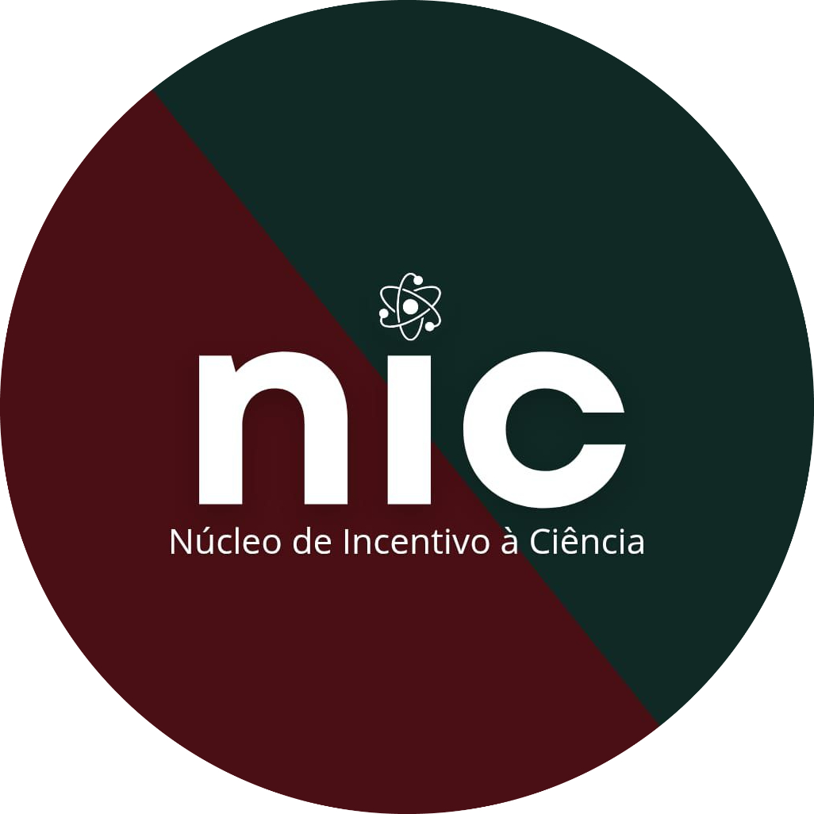

Diretório Acadêmico de Enfermagem Irmã Ruth
Gestão 2025 - 2026
Gestão 2025 - 2026
Transformando a universidade pela ciência, lutando pela valorização da Enfermagem.
Ver Últimas Notícias
Pesquisando hoje para transformar o cuidado de amanhã. O Núcleo de Incentivo à Ciência é o projeto do DAEIR focado em formar pesquisadores e valorizar o conhecimento produzido pelos estudantes. Estamos democratizando o acesso à pesquisa, fomentando a iniciação científica e provando que a Enfermagem brasileira produz ciência de altíssimo impacto.
Orientação e suporte para alunos ingressarem em projetos de pesquisa institucionais, desenvolvendo uma base científica sólida.
Mentoria prática para produção de resumos, artigos e pôsteres, preparando você para brilhar nos maiores congressos do país.
Apoio à gestão e integração das ligas, fortalecendo o ensino prático e teórico especializado nas diversas áreas da enfermagem.

orque nem só de livros, plantões e laboratórios vive o estudante. A Atlética Enfurecidos existe para promover o esporte, aliviar a tensão e construir a verdadeira integração entre as turmas. Das competições mais acirradas às melhores festas e recepções de calouros, somos o espaço perfeito para você recarregar as energias e viver a universidade intensamente.
Faça parte dos nossos times! Treinos regulares, competições intermódulos e muita dedicação nas quadras.
Em breve! Adquira produtos exclusivos da Atlética e mostre seu orgulho de ser Enfurecido.
A melhor integração da faculdade! Organizamos eventos, calouradas e ações para celebrar nossa união.
Manuais, Editais e Documentos Oficiais em um só lugar.
Sua voz é essencial! Participe da Assembleia Geral 2026 e ajude a construir o novo estatuto que guiará o futuro do DAEIR!
Baixar PDFA democracia do nosso curso começa por você! Inscreva-se na Comissão Eleitoral 2026 e seja fundamental para garantir um processo eleitoral justo, seguro e transparente no DAEIR!
Baixar PDFConheça a proposta do nosso novo estatuto! Leia a minuta com atenção e prepare-se para debater e decidir o futuro do DAEIR na nossa Assembleia Geral.
Baixar PDFNosso compromisso é com a transparência e com você! Acesse a Prestação Parcial de Contas 2026 e acompanhe de perto como estamos investindo os recursos na nossa Enfermagem.
Baixar PDFTem alguma dúvida, sugestão ou precisa de ajuda? Mande uma mensagem direta para a nossa ouvidoria.